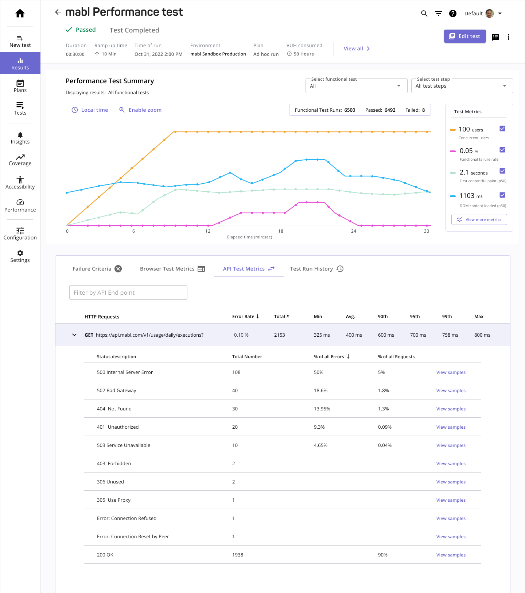
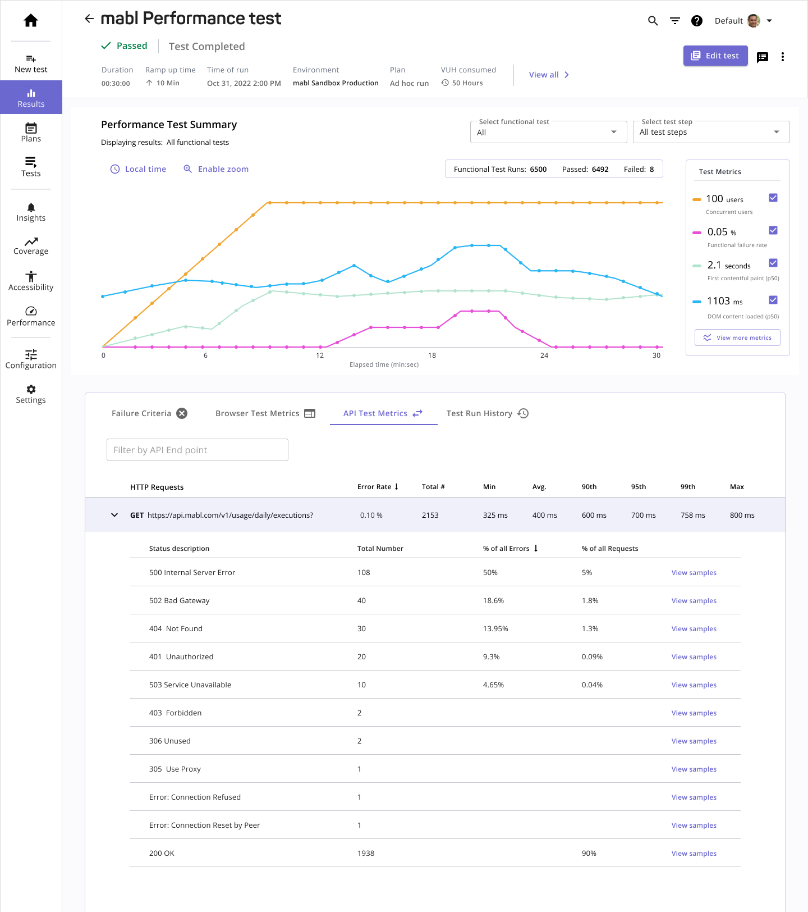

UX Research
Competitor Research
To begin, the product manager's and I had to define the scope of requirements for performance testing. We conducted competitor research to understand the scope of settings and features needed.


After researching over six different competitors, we discovered that each software tool applied settings and load parameters at the test level. Each test is composed of multiple API requests or browser steps. The reporting of results can then be filtered by individual test steps. From this research, we outlined the set of test settings and reporting requirements.
Test settings:
- Ability to add an API or Browser test
- Define load configuration (up to 1000 users) per test
- Define test failure criteria
- Add one or failure criteria for each test added
- Set test duration (up to 1 hour)
- Set ramp up time
Reporting requirements:
- Response Time
- Concurrency
- Transaction Rate
- Throughput
- Failed Rate
- Pass Rate
User Research
We met with eight of our largest clients to understand their organizations needs for performance testing. The individuals we interviewed included CEO's, engineering managers, and QA testers & engineers. From our interviews we discovered:
Key Findings
- Load testing for Browsers & APIs are both common use-cases, but API load testing was the higher priority.
- About 75% of customers found a greater need for API testing.
- API endpoint-level metrics and page-level URL performance is top of mind when viewing results.
- It is important to capture historical metrics overtime to measure performance and understand if you're gaining or losing ground.
- For browser loading testing, there is currently no way to assess how core web vitals change under load.


 
